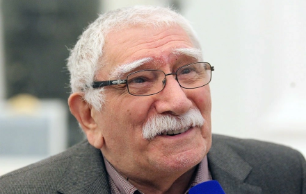

Скончался Армен Джигарханян
14 ноября 2020 14 ноября 2020 года на 86-м году жизни умер легендарный советский, российский и армянский актёр, театральный режиссёр и педагог, народный артист СССР Армен Джигарханян. Об этом сообщила пресс-служба Московского драматического театра под руководством актера: «Московский театр п/р Армена Джигарханяна с прискорбием сообщает о смерти своего художественного руководителя, народного артиста СССР Армена Борисовича Джигарханяна», — говорится в сообщении. Джигарханян родился в Ереване, рос в русскоязычной среде, учился в русской школе и уже в школьные годы увлёкся театром и кино, а после окончания школы поехал в Москву и пытался поступить в ГИТИС, но неудачно.
Вернувшись в Ереван, устроился на киностудию «Арменфильм» помощником оператора и поступил в Ереванский художественно-театральный институт. Первой ролью Армена Борисовича в кино стала роль в фильме «Обвал», а известность ему принесла одна из лучших его киноролей — молодой учёный-физик Артём Манвелян из картины «Здравствуй, это я!».
Впоследствии Джигарханян стал одним из самых снимаемых актёров (более 250 ролей в кино- и телефильмах) и был занесён в Книгу рекордов Гиннесса как самый снимаемый отечественный актёр. На его счету множество разноплановых ролей в фильмах лучших советских и российских режиссёров, в лентах различных жанров, в комедийных и приключенческих картинах, в драмах и музыкальных фильмах. Много работал на дубляже, озвучивал мультфильмы.
Армен Борисович играл в «Ленкоме» и в «Московском театре имени Владимира Маяковского», а в 1996 году основал «Московский драматический театр под руководством Армена Джигарханяна» и стал его художественным руководителем. Театр «Д» сразу занял особое место в ряду небольших театров Москвы. Свои соболезнования выразили многие известные люди, в том числе режиссер Владимир Бортко, артисты Игорь Костолевский и Валерий Гаркалин, а также мэр Москвы Сергей Собянин.
Заголовок 2 уровня
Идейные соображения высшего порядка, а также укрепление и развитие структуры обеспечивает широкому кругу (специалистов) участие в формировании существенных финансовых и административных условий. Идейные соображения высшего порядка, а также рамки и место обучения кадров в значительной степени обуславливает создание форм развития.
Заголовок 3 уровня
Идейные соображения высшего порядка, а также укрепление и развитие структуры обеспечивает широкому кругу (специалистов) участие в формировании существенных финансовых и административных условий. Идейные соображения высшего порядка, а также рамки и место обучения кадров в значительной степени обуславливает создание форм развития.
Заголовок 4 уровня
Маркированный список используется, если порядок следования пунктов не имеет значения или все пункты равнозначны.
- первый пункт маркированного списка;
- второй пункт маркированного списка;
- последний пункт маркированного списка.
Используйте нумерованный список, если порядок расположения пунктов друг за другом имеет значение. Например, один пункт следует из другого.
- 1. Первый пункт нумерованного списка.
- 2. Второй пункт нумерованного списка.
- 3. Третий пункт нумерованного списка.